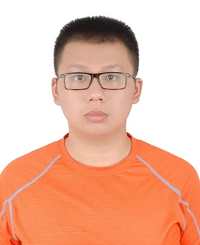

|
Chengyao Wang
I am a PhD student at the Department of Computer Science and Engineering, The Chinese University of Hong Kong (CUHK), advised by Prof. Jiaya Jia .
Prior to that, I obtained my B.E. degree in Computer Science from Sun Yat-Sen University.
I am particular interested in building human like multimodal agent that can actively interact to the physical world and have long-turm memory.
Recently, my research mainly focus on vision-language models.
Google Scholar /
GitHub /
Twitter /
Linkdin /
Email
|

|